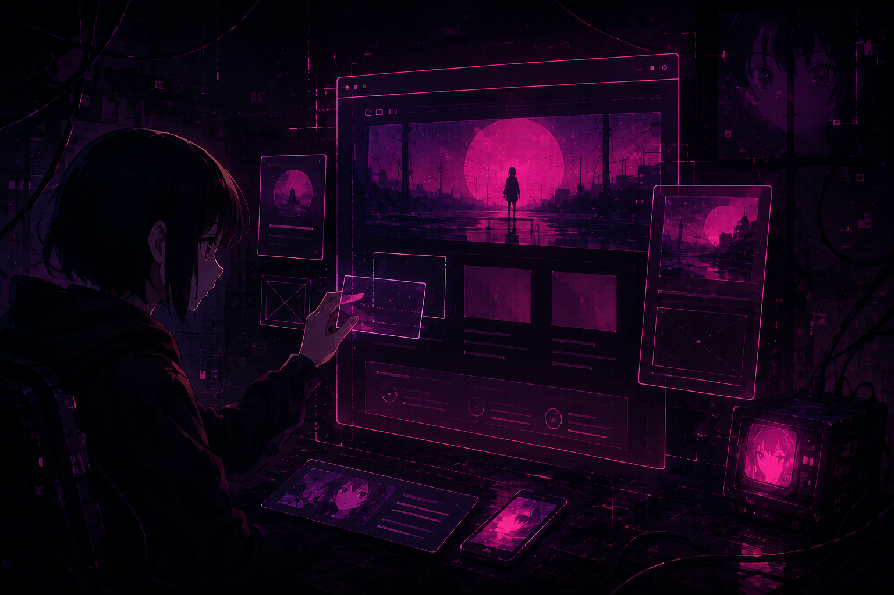
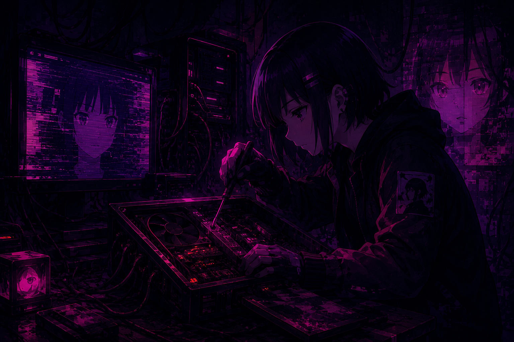

Travou num código? Poste sua dúvida e receba ajuda da comunidade. Aqui ninguém aprende sozinho.

Livros gratuitos, documentações, cursos e ferramentas curados para cada etapa da sua jornada.

Roteiros práticos pra você saber exatamente por onde começar e como evoluir em cada tecnologia.
Corra pelo vazio, desvie dos bugs e mantenha sua conexão viva. Um mini game experimental da comunidade CyberVoid.
Pressione Espaço ou clique/toque no jogo para pular.